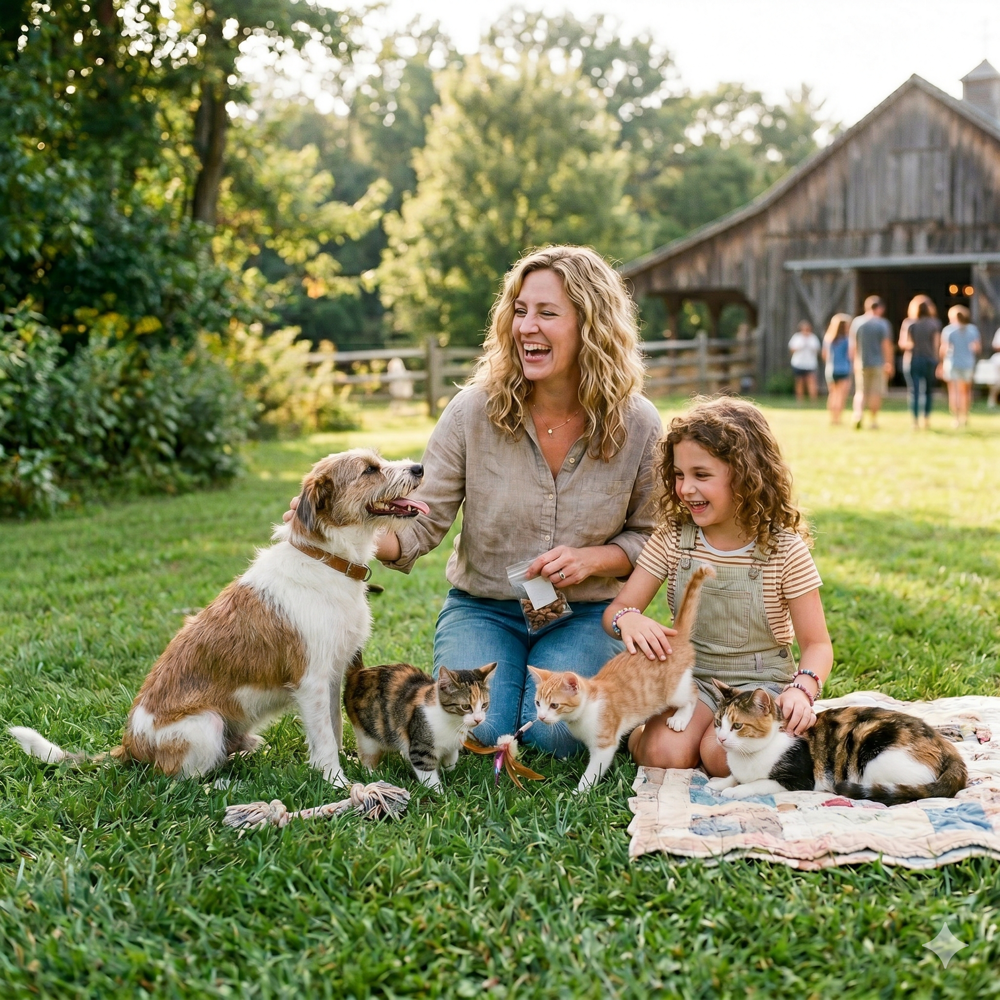

Bringing a new pet home is exciting, but it also takes preparation. This guide will help new pet owners get ready with the basic supplies and plans.
Things to Consider Before Getting a Pet
- 🐾Long-term commitment: Pets can live for 10 to 15 years or longer. Make sure you can take care of them for that time.
- 🐾Allergies in the home: Make sure no one in your home has allergies to pets.
- 🐾Financial responsibility: Pets require ongoing costs such as food, supplies, and vet care. It can cost about $1,000 per year.
- 🐾Home environment: Your home should be clean, safe, and comfortable for a pet.
New Owner Checklist
| Item | Purpose | Tips | Done |
|---|---|---|---|
| Food & Water Bowls | Provide clean food and fresh water every day | Choose easy-to-clean and durable bowls | |
| Quality Pet Food | Support your pet’s health and growth | Select food based on age, size, and health | |
| Comfortable Bed | Create a safe and comfortable place to rest | Pick a size that fits your pet comfortably | |
| Toys | Help reduce stress and keep your pet active | Choose safe toys and rotate them regularly | |
| Leash or Carrier | Keep your pet safe during travel or outdoor time | Make sure it is secure and the right size | |
| First Vet Visit | Make sure your pet is healthy and up to date on vaccines | Schedule an appointment soon after adoption | |
| ID Tag or Microchip | Help identify your pet if it gets lost | Keep your contact information updated | |
| Time and Attention | Build trust and a strong bond with your pet | Spend time interacting with your pet daily |
Using this checklist can help make the transition easier for both you and your new pet.